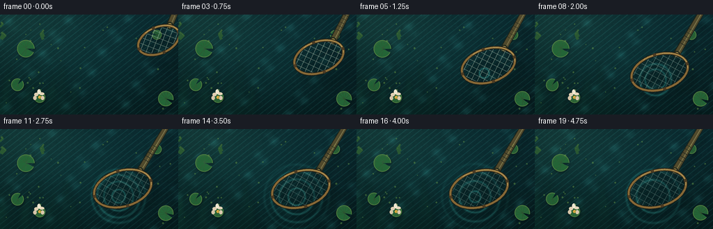
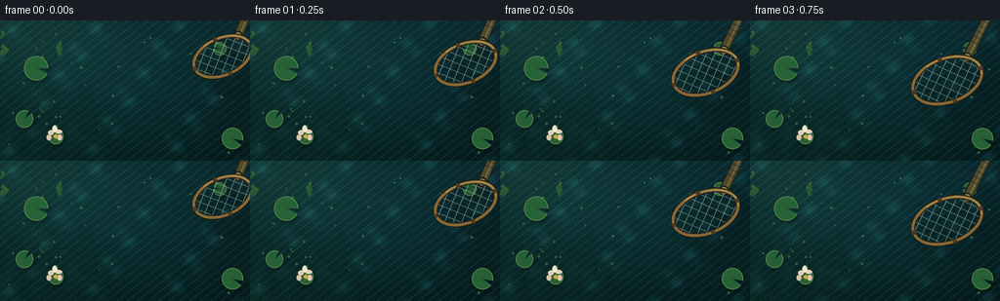
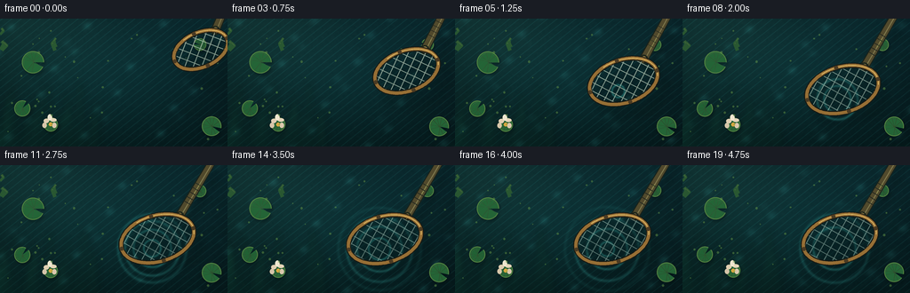
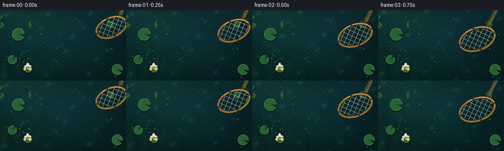

CODING AGENTS AS PIXEL WORLD MODELS
traex/DeepSeek-V4.1-Flash · mechanics_0013
点击播放 · 原生 RGB 像素
逐轮保存的候选
回放视频、检查图与代码变化。
每份候选均可单独播放。实际图片检查记录在下方工具轨迹中。
候选 01播放与检查图
点击播放 · 原生 RGB 像素


展开代码变化
--- 上一保存版本
+++ 本次保存版本
@@ -0,0 +1,549 @@
+from __future__ import annotations
+
+import math
+from pathlib import Path
+
+import numpy as np
+from PIL import Image, ImageChops, ImageDraw, ImageFilter
+
+import artifact_io
+
+
+WIDTH = 256
+HEIGHT = 144
+FRAMES = 20
+FPS = 4.0
+SUPERSAMPLE = 4
+
+W = WIDTH * SUPERSAMPLE
+H = HEIGHT * SUPERSAMPLE
+
+
+def smoothstep(value: float) -> float:
+ value = max(0.0, min(1.0, value))
+ return value * value * (3.0 - 2.0 * value)
+
+
+def ease_out_cubic(value: float) -> float:
+ value = max(0.0, min(1.0, value))
+ return 1.0 - (1.0 - value) ** 3
+
+
+def ellipse_points(
+ center: tuple[float, float],
+ radii: tuple[float, float],
+ angle: float,
+ count: int = 180,
+) -> list[tuple[float, float]]:
+ cx, cy = center
+ rx, ry = radii
+ ca, sa = math.cos(angle), math.sin(angle)
+ points = []
+ for i in range(count):
+ theta = 2.0 * math.pi * i / count
+ u, v = rx * math.cos(theta), ry * math.sin(theta)
+ points.append((cx + u * ca - v * sa, cy + u * sa + v * ca))
+ return points
+
+
+def local_to_image(
+ center: tuple[float, float],
+ angle: float,
+ u: float,
+ v: float,
+) -> tuple[float, float]:
+ cx, cy = center
+ ca, sa = math.cos(angle), math.sin(angle)
+ return cx + u * ca - v * sa, cy + u * sa + v * ca
+
+
+def make_water(frame_index: int) -> Image.Image:
+ """Render deep pond water with slow caustics and submerged planting."""
+ t = frame_index / FPS
+ yy, xx = np.mgrid[0:H, 0:W].astype(np.float32)
+ x = xx / max(1, W - 1)
+ y = yy / max(1, H - 1)
+
+ top_left = np.array([17.0, 59.0, 61.0], dtype=np.float32)
+ top_right = np.array([12.0, 50.0, 57.0], dtype=np.float32)
+ bottom_left = np.array([9.0, 42.0, 43.0], dtype=np.float32)
+ bottom_right = np.array([7.0, 32.0, 35.0], dtype=np.float32)
+ horizontal = top_left[None, None, :] * (1.0 - x[..., None]) + top_right[None, None, :] * x[..., None]
+ vertical = bottom_left[None, None, :] * (1.0 - x[..., None]) + bottom_right[None, None, :] * x[..., None]
+ base = horizontal * (1.0 - y[..., None]) + vertical * y[..., None]
+
+ phase = 2.0 * math.pi
+ wave = (
+ np.sin(phase * (3.1 * x + 1.2 * y + 0.13 * t))
+ + 0.62 * np.sin(phase * (5.8 * x - 3.4 * y - 0.19 * t) + 1.3)
+ + 0.34 * np.sin(phase * (9.2 * x + 7.1 * y + 0.31 * t) + 2.1)
+ ) / 1.96
+ caustic = np.maximum(0.0, wave) ** 3
+ fine = np.sin(phase * (24.0 * x + 17.0 * y + 0.37 * t))
+ fine = np.maximum(0.0, fine) ** 10
+
+ glow = np.exp(-(((x - 0.16) / 0.34) ** 2 + ((y - 0.10) / 0.38) ** 2))
+ vignette = 0.82 + 0.18 * np.cos((x - 0.5) * math.pi) * np.cos((y - 0.5) * math.pi)
+ base *= vignette[..., None]
+ base += caustic[..., None] * np.array([9.0, 25.0, 24.0], dtype=np.float32)
+ base += fine[..., None] * np.array([8.0, 24.0, 22.0], dtype=np.float32)
+ base += glow[..., None] * np.array([5.0, 8.0, 5.0], dtype=np.float32)
+
+ rng = np.random.default_rng(128)
+ grain = rng.normal(0.0, 1.0, (HEIGHT // 2, WIDTH // 2)).astype(np.float32)
+ grain = np.asarray(
+ Image.fromarray(grain, mode="F").resize((W, H), Image.Resampling.BICUBIC),
+ dtype=np.float32,
+ )
+ base += grain[..., None] * 0.9
+ water = Image.fromarray(np.clip(base, 0, 255).astype(np.uint8), mode="RGB").convert("RGBA")
+
+ underwater = Image.new("RGBA", (W, H), (0, 0, 0, 0))
+ draw = ImageDraw.Draw(underwater)
+ plant_color = (18, 70, 51, 88)
+ for i in range(14):
+ root_x = (-8 + i * 9.0) * SUPERSAMPLE
+ root_y = H + 4 * SUPERSAMPLE
+ length = (38 + (i * 11) % 42) * SUPERSAMPLE
+ sway = math.sin(i * 1.7 + t * 0.34) * 7 * SUPERSAMPLE
+ draw.line(
+ [
+ (root_x, root_y),
+ (root_x + sway * 0.35, root_y - length * 0.55),
+ (root_x + sway, root_y - length),
+ ],
+ fill=plant_color,
+ width=(4 + i % 3) * SUPERSAMPLE,
+ joint="curve",
+ )
+ for i in range(9):
+ root_x = W + 2 * SUPERSAMPLE
+ root_y = (24 + i * 17) * SUPERSAMPLE
+ length = (22 + (i * 13) % 34) * SUPERSAMPLE
+ sway = math.sin(i * 2.1 - t * 0.27) * 5 * SUPERSAMPLE
+ draw.line(
+ [
+ (root_x, root_y),
+ (root_x - length * 0.62, root_y + sway * 0.5),
+ (root_x - length, root_y + sway),
+ ],
+ fill=(16, 61, 48, 70),
+ width=(3 + i % 2) * SUPERSAMPLE,
+ joint="curve",
+ )
+ underwater = underwater.filter(ImageFilter.GaussianBlur(4.2 * SUPERSAMPLE))
+ water = Image.alpha_composite(water, underwater)
+ return water
+
+
+def add_ripples(
+ image: Image.Image,
+ frame_index: int,
+ contact: tuple[float, float],
+) -> Image.Image:
+ """Add quiet contact rings after the net touches the surface."""
+ t = frame_index / FPS
+ contact_time = 1.25
+ if t < contact_time:
+ return image
+
+ yy, xx = np.mgrid[0:H, 0:W].astype(np.float32)
+ cx, cy = contact[0] * SUPERSAMPLE, contact[1] * SUPERSAMPLE
+ distance = np.sqrt((xx - cx) ** 2 + (yy - cy) ** 2)
+ ripple = np.zeros((H, W), dtype=np.float32)
+
+ for birth in (1.25, 1.62, 2.08, 2.63, 3.25, 3.95):
+ age = t - birth
+ if 0.0 <= age <= 2.2:
+ radius = (7.0 + 21.0 * age) * SUPERSAMPLE
+ width = (1.15 + age * 0.45) * SUPERSAMPLE
+ fade = max(0.0, 1.0 - age / 2.2)
+ ripple += fade * np.exp(-((distance - radius) / width) ** 2)
+
+ ripple = np.clip(ripple, 0.0, 1.0)
+ water = np.asarray(image.convert("RGB"), dtype=np.float32)
+ water += ripple[..., None] * np.array([30.0, 84.0, 78.0], dtype=np.float32)
+ water = np.clip(water, 0, 255).astype(np.uint8)
+ return Image.fromarray(water, mode="RGB").convert("RGBA")
+
+
+def add_water_glints(image: Image.Image, frame_index: int) -> Image.Image:
+ rng = np.random.default_rng(311)
+ layer = Image.new("RGBA", (W, H), (0, 0, 0, 0))
+ draw = ImageDraw.Draw(layer)
+ t = frame_index / FPS
+ for i in range(52):
+ px = int(rng.uniform(0.02, 0.98) * W)
+ py = int(rng.uniform(0.03, 0.97) * H)
+ length = int(rng.uniform(1.0, 4.0) * SUPERSAMPLE)
+ phase = rng.uniform(0.0, math.tau)
+ twinkle = max(0.0, math.sin(phase + t * (0.9 + (i % 5) * 0.18)))
+ alpha = int(22 + 92 * twinkle * rng.uniform(0.35, 1.0))
+ color = (174, 224, 204, alpha)
+ draw.line(
+ [(px - length, py), (px + length, py + length // 5)],
+ fill=color,
+ width=max(1, SUPERSAMPLE // 2),
+ )
+ layer = layer.filter(ImageFilter.GaussianBlur(0.35 * SUPERSAMPLE))
+ return Image.alpha_composite(image, layer)
+
+
+def draw_lily_pad(
+ image: Image.Image,
+ center: tuple[float, float],
+ radius: float,
+ angle: float,
+ notch: float,
+ color_shift: int = 0,
+ flower: bool = False,
+) -> Image.Image:
+ """Draw a notched lily pad and its soft reflection."""
+ cx, cy = center[0] * SUPERSAMPLE, center[1] * SUPERSAMPLE
+ r = radius * SUPERSAMPLE
+ bbox = (cx - r, cy - r, cx + r, cy + r)
+
+ shadow = Image.new("RGBA", (W, H), (0, 0, 0, 0))
+ sd = ImageDraw.Draw(shadow)
+ sd.pieslice(
+ (bbox[0] + 1.5 * SUPERSAMPLE, bbox[1] + 2.4 * SUPERSAMPLE, bbox[2] + 1.5 * SUPERSAMPLE, bbox[3] + 2.4 * SUPERSAMPLE),
+ notch + 13,
+ notch + 347,
+ fill=(1, 18, 17, 92),
+ )
+ shadow = shadow.filter(ImageFilter.GaussianBlur(1.5 * SUPERSAMPLE))
+ image = Image.alpha_composite(image, shadow)
+
+ pad = Image.new("RGBA", (W, H), (0, 0, 0, 0))
+ draw = ImageDraw.Draw(pad)
+ draw.pieslice(
+ bbox,
+ notch + 12,
+ notch + 348,
+ fill=(37 + color_shift, 103 + color_shift, 55 + color_shift // 2, 245),
+ )
+ draw.arc(bbox, notch + 12, notch + 348, fill=(91, 139, 67, 230), width=SUPERSAMPLE)
+ draw.arc(
+ (bbox[0] + 2 * SUPERSAMPLE, bbox[1] + 2 * SUPERSAMPLE, bbox[2] - 2 * SUPERSAMPLE, bbox[3] - 2 * SUPERSAMPLE),
+ notch + 155,
+ notch + 320,
+ fill=(110, 158, 77, 120),
+ width=max(1, SUPERSAMPLE // 2),
+ )
+ ca, sa = math.cos(angle), math.sin(angle)
+ for j in range(9):
+ a = notch + 25 + j * 36
+ ux, uy = math.cos(a), math.sin(a)
+ end = (
+ cx + ux * r * 0.91,
+ cy + uy * r * 0.91,
+ )
+ vein_angle = angle + (j - 4) * 0.055
+ vx, vy = math.cos(vein_angle), math.sin(vein_angle)
+ start = (cx + vx * r * 0.09, cy + vy * r * 0.09)
+ draw.line([start, end], fill=(106, 154, 70, 100), width=max(1, SUPERSAMPLE // 2))
+
+ if flower:
+ petals = [
+ (-5, -4, 6, 5, (242, 221, 190, 235)),
+ (3, -5, 7, 4, (248, 228, 198, 235)),
+ (-1, -8, 5, 7, (249, 238, 215, 245)),
+ (-7, 1, 5, 6, (238, 215, 184, 230)),
+ (4, 1, 5, 6, (242, 219, 189, 230)),
+ ]
+ for dx, dy, pw, ph, color in petals:
+ draw.ellipse(
+ (
+ cx + (dx - pw / 2) * SUPERSAMPLE,
+ cy + (dy - ph / 2) * SUPERSAMPLE,
+ cx + (dx + pw / 2) * SUPERSAMPLE,
+ cy + (dy + ph / 2) * SUPERSAMPLE,
+ ),
+ fill=color,
+ )
+ draw.ellipse(
+ (cx - 2.1 * SUPERSAMPLE, cy - 2.1 * SUPERSAMPLE, cx + 2.1 * SUPERSAMPLE, cy + 2.1 * SUPERSAMPLE),
+ fill=(226, 174, 65, 245),
+ )
+
+ return Image.alpha_composite(image, pad)
+
+
+def add_surface_plants(image: Image.Image, frame_index: int) -> Image.Image:
+ t = frame_index / FPS
+ bob = math.sin(t * 1.05) * 0.45
+ pads = [
+ ((37, 49), 12.5, -0.35, 12, 0, False),
+ ((25, 101), 9.0, 0.5, 310, -3, False),
+ ((57, 119), 8.0, -0.1, 215, 3, True),
+ ((238, 121), 11.0, 0.8, 24, 0, False),
+ ((225, 29), 7.0, 0.2, 190, -2, False),
+ ]
+ for index, (center, radius, angle, notch, shift, flower) in enumerate(pads):
+ image = draw_lily_pad(
+ image,
+ (center[0], center[1] + bob * (0.6 + index * 0.08)),
+ radius,
+ angle,
+ notch,
+ shift,
+ flower,
+ )
+
+ layer = Image.new("RGBA", (W, H), (0, 0, 0, 0))
+ draw = ImageDraw.Draw(layer)
+ # A few narrow leaves enter from the frame edges and frame the pond.
+ leaves = [
+ ((3, 139), (18, 112), (8, 101)),
+ ((9, 143), (31, 121), (18, 108)),
+ ((247, 143), (235, 112), (247, 98)),
+ ((253, 127), (241, 101), (251, 87)),
+ ((0, 70), (15, 54), (7, 43)),
+ ]
+ for points, width in zip(leaves, (4.2, 3.2, 4.0, 2.8, 3.1)):
+ draw.line(points, fill=(44, 91, 49, 228), width=int(width * SUPERSAMPLE), joint="curve")
+ draw.line(points[1:], fill=(99, 135, 61, 145), width=max(1, int(width * 0.34 * SUPERSAMPLE)))
+
+ # Tiny floating specks give the pond a living surface without competing with the net.
+ rng = np.random.default_rng(88)
+ for i in range(34):
+ x = rng.uniform(0.03, 0.97) * W
+ y = rng.uniform(0.04, 0.96) * H
+ if 130 * SUPERSAMPLE < x < 215 * SUPERSAMPLE and 54 * SUPERSAMPLE < y < 112 * SUPERSAMPLE:
+ continue
+ rr = rng.uniform(0.55, 1.4) * SUPERSAMPLE
+ draw.ellipse((x - rr, y - rr, x + rr, y + rr), fill=(104, 153, 71, 120))
+
+ return Image.alpha_composite(image, layer)
+
+
+def draw_handle(
+ layer: Image.Image,
+ attach: tuple[float, float],
+ tip: tuple[float, float],
+ submerged: float,
+) -> None:
+ draw = ImageDraw.Draw(layer)
+ ax, ay = attach
+ tx, ty = tip
+ dx, dy = tx - ax, ty - ay
+ length = math.hypot(dx, dy)
+ px, py = -dy / length, dx / length
+ base_half = 5.2 * SUPERSAMPLE
+ tip_half = 3.0 * SUPERSAMPLE
+ outer = [
+ (ax + px * base_half, ay + py * base_half),
+ (tx + px * tip_half, ty + py * tip_half),
+ (tx - px * tip_half, ty - py * tip_half),
+ (ax - px * base_half, ay - py * base_half),
+ ]
+ inner_half = 4.0 * SUPERSAMPLE
+ inner = [
+ (ax + px * inner_half, ay + py * inner_half),
+ (tx + px * 2.2 * SUPERSAMPLE, ty + py * 2.2 * SUPERSAMPLE),
+ (tx - px * 2.2 * SUPERSAMPLE, ty - py * 2.2 * SUPERSAMPLE),
+ (ax - px * inner_half, ay - py * inner_half),
+ ]
+ draw.polygon(outer, fill=(24, 34, 27, 250))
+ draw.polygon(inner, fill=(82, 74, 44, 250))
+ draw.line(
+ [(ax + px * 1.3 * SUPERSAMPLE, ay + py * 1.3 * SUPERSAMPLE), (tx + px * 0.5 * SUPERSAMPLE, ty + py * 0.5 * SUPERSAMPLE)],
+ fill=(168, 148, 88, 190),
+ width=max(1, int(1.05 * SUPERSAMPLE)),
+ )
+
+ # Cork grip bands near the net collar.
+ ux, uy = dx / length, dy / length
+ for distance in (17, 23, 29, 35, 41):
+ sx, sy = ax + ux * distance * SUPERSAMPLE, ay + uy * distance * SUPERSAMPLE
+ draw.line(
+ [(sx + px * 4.4 * SUPERSAMPLE, sy + py * 4.4 * SUPERSAMPLE), (sx - px * 4.4 * SUPERSAMPLE, sy - py * 4.4 * SUPERSAMPLE)],
+ fill=(42, 37, 25, 185),
+ width=max(1, int(0.85 * SUPERSAMPLE)),
+ )
+
+ collar_r = (5.2 - submerged * 0.3) * SUPERSAMPLE
+ draw.ellipse((ax - collar_r, ay - collar_r, ax + collar_r, ay + collar_r), fill=(31, 39, 28, 250))
+ draw.ellipse(
+ (ax - collar_r * 0.66, ay - collar_r * 0.66, ax + collar_r * 0.66, ay + collar_r * 0.66),
+ fill=(169, 140, 74, 250),
+ )
+
+
+def draw_net_shadow(
+ image: Image.Image,
+ center: tuple[float, float],
+ radii: tuple[float, float],
+ angle: float,
+ attach: tuple[float, float],
+ tip: tuple[float, float],
+ offset: tuple[float, float],
+ opacity: float,
+ blur: float,
+) -> Image.Image:
+ shadow = Image.new("RGBA", (W, H), (0, 0, 0, 0))
+ draw = ImageDraw.Draw(shadow)
+ sx, sy = offset[0] * SUPERSAMPLE, offset[1] * SUPERSAMPLE
+ sc = (center[0] * SUPERSAMPLE + sx, center[1] * SUPERSAMPLE + sy)
+ sr = (radii[0] * SUPERSAMPLE, radii[1] * SUPERSAMPLE)
+ pts = ellipse_points(sc, sr, angle)
+ draw.polygon(pts, fill=(2, 16, 17, 58))
+ draw.line(pts + [pts[0]], fill=(1, 13, 14, 105), width=int(4.2 * SUPERSAMPLE))
+ draw.line(
+ [
+ (attach[0] * SUPERSAMPLE + sx, attach[1] * SUPERSAMPLE + sy),
+ (tip[0] * SUPERSAMPLE + sx, tip[1] * SUPERSAMPLE + sy),
+ ],
+ fill=(1, 13, 14, 75),
+ width=int(7.0 * SUPERSAMPLE),
+ )
+ shadow = shadow.filter(ImageFilter.GaussianBlur(blur * SUPERSAMPLE))
+ alpha = shadow.getchannel("A").point(lambda value: int(value * opacity))
+ shadow.putalpha(alpha)
+ return Image.alpha_composite(image, shadow)
+
+
+def draw_net(
+ image: Image.Image,
+ center: tuple[float, float],
+ radii: tuple[float, float],
+ angle: float,
+ submerged: float,
+) -> Image.Image:
+ cx, cy = center[0] * SUPERSAMPLE, center[1] * SUPERSAMPLE
+ rx, ry = radii[0] * SUPERSAMPLE, radii[1] * SUPERSAMPLE
+ center_px = (cx, cy)
+
+ attach_u, attach_v = rx * 0.74, -ry * 0.68
+ attach = local_to_image(center_px, angle, attach_u, attach_v)
+ handle_angle = angle - math.radians(43)
+ tip = (
+ attach[0] + math.cos(handle_angle) * 205 * SUPERSAMPLE,
+ attach[1] + math.sin(handle_angle) * 205 * SUPERSAMPLE,
+ )
+
+ net = Image.new("RGBA", (W, H), (0, 0, 0, 0))
+ draw_handle(net, attach, tip, submerged)
+
+ # The bag is a translucent sheet beneath the rim.
+ bag = Image.new("RGBA", (W, H), (0, 0, 0, 0))
+ bag_draw = ImageDraw.Draw(bag)
+ pts = ellipse_points(center_px, (rx, ry), angle)
+ bag_draw.polygon(pts, fill=(7, 28, 28, int(30 + submerged * 18)))
+
+ mask = Image.new("L", (W, H), 0)
+ ImageDraw.Draw(mask).polygon(pts, fill=255)
+
+ mesh = Image.new("RGBA", (W, H), (0, 0, 0, 0))
+ md = ImageDraw.Draw(mesh)
+ spacing = 11.5 * SUPERSAMPLE
+ span = rx + ry + spacing
+ mesh_color = (
+ int(191 - submerged * 38),
+ int(211 - submerged * 24),
+ int(188 - submerged * 14),
+ int(145 - submerged * 38),
+ )
+ mesh_width = max(1, int(0.82 * SUPERSAMPLE))
+ for c in np.arange(-span, span + spacing, spacing):
+ p1 = local_to_image(center_px, angle, -span, c + span)
+ p2 = local_to_image(center_px, angle, span, c - span)
+ md.line([p1, p2], fill=mesh_color, width=mesh_width)
+ p3 = local_to_image(center_px, angle, -span, c - span)
+ p4 = local_to_image(center_px, angle, span, c + span)
+ md.line([p3, p4], fill=mesh_color, width=mesh_width)
+
+ mesh_alpha = ImageChops.multiply(mesh.getchannel("A"), mask)
+ mesh.putalpha(mesh_alpha)
+ bag = Image.alpha_composite(bag, mesh)
+
+ # A soft lower-left tint makes the bag read as resting on the water.
+ shade = Image.new("RGBA", (W, H), (0, 0, 0, 0))
+ shade_draw = ImageDraw.Draw(shade)
+ shade_draw.ellipse(
+ (cx - rx * 0.74, cy - ry * 0.15, cx + rx * 0.62, cy + ry * 0.82),
+ fill=(2, 23, 25, int(17 + submerged * 18)),
+ )
+ shade.putalpha(ImageChops.multiply(shade.getchannel("A"), mask))
+ bag = Image.alpha_composite(bag, shade)
+ net = Image.alpha_composite(net, bag)
+
+ # Rim: dark seat, warm varnished wood, and a narrow upper-left highlight.
+ rim = Image.new("RGBA", (W, H), (0, 0, 0, 0))
+ rd = ImageDraw.Draw(rim)
+ rim_points = pts + [pts[0]]
+ rd.line(rim_points, fill=(26, 29, 22, 245), width=int(5.2 * SUPERSAMPLE), joint="curve")
+ rd.line(rim_points, fill=(137, 105, 54, 250), width=int(3.2 * SUPERSAMPLE), joint="curve")
+ highlight_count = 62
+ highlight = []
+ for i in range(highlight_count):
+ theta = 2.0 * math.pi * (0.68 + 0.36 * i / (highlight_count - 1))
+ u, v = rx * math.cos(theta), ry * math.sin(theta)
+ highlight.append(local_to_image(center_px, angle, u, v))
+ rd.line(highlight, fill=(220, 186, 108, 215), width=max(1, int(0.9 * SUPERSAMPLE)), joint="curve")
+
+ # Four small lashings where the bag meets the rim.
+ for theta in (0.0, math.pi * 0.5, math.pi, math.pi * 1.5):
+ u, v = rx * math.cos(theta), ry * math.sin(theta)
+ px, py = local_to_image(center_px, angle, u, v)
+ rr = 2.2 * SUPERSAMPLE
+ rd.ellipse((px - rr, py - rr, px + rr, py + rr), fill=(77, 59, 34, 245))
+
+ net = Image.alpha_composite(net, rim)
+ return Image.alpha_composite(image, net)
+
+
+def render_frame(frame_index: int) -> np.ndarray:
+ t = frame_index / FPS
+ progress = frame_index / (FRAMES - 1)
+ descent = ease_out_cubic((progress - 0.02) / 0.67)
+ settle = smoothstep((t - 1.25) / 1.7)
+
+ center = (
+ 228.0 - 52.0 * descent,
+ 37.0 + 49.0 * descent + 0.45 * math.sin(t * 2.1) * settle,
+ )
+ radii = (
+ 31.0 + 11.0 * descent,
+ 19.0 + 7.0 * descent,
+ )
+ angle = math.radians(-24.0 + 8.0 * descent)
+ submerged = smoothstep((t - 1.25) / 1.35)
+ attach_u, attach_v = radii[0] * 0.74, -radii[1] * 0.68
+ attach = local_to_image(center, angle, attach_u, attach_v)
+ handle_angle = angle - math.radians(43)
+ tip = (
+ attach[0] + math.cos(handle_angle) * 205,
+ attach[1] + math.sin(handle_angle) * 205,
+ )
+
+ image = make_water(frame_index)
+ image = add_ripples(image, frame_index, (center[0] - 6.0, center[1] + 11.0))
+ image = draw_net_shadow(
+ image,
+ center,
+ radii,
+ angle,
+ attach,
+ tip,
+ offset=(15.0 - 7.0 * descent, 19.0 - 9.0 * descent),
+ opacity=0.54 + 0.24 * descent,
+ blur=6.2 - 2.0 * descent,
+ )
+ image = add_water_glints(image, frame_index)
+ image = add_surface_plants(image, frame_index)
+ image = draw_net(image, center, radii, angle, submerged)
+
+ small = image.convert("RGB").resize((WIDTH, HEIGHT), Image.Resampling.LANCZOS)
+ return np.asarray(small, dtype=np.uint8).copy()
+
+
+def main() -> None:
+ case_dir = Path(__file__).resolve().parent
+ frames = np.stack([render_frame(index) for index in range(FRAMES)], axis=0)
+ artifact_io.save(frames, case_dir)
+ print(f"saved {frames.shape[0]} frames at {frames.shape[2]}x{frames.shape[1]}")
+
+
+if __name__ == "__main__":
+ main()
候选 02播放与检查图
点击播放 · 原生 RGB 像素


展开代码变化
--- 上一保存版本
+++ 本次保存版本
@@ -78,19 +78,19 @@
+ 0.62 * np.sin(phase * (5.8 * x - 3.4 * y - 0.19 * t) + 1.3)
+ 0.34 * np.sin(phase * (9.2 * x + 7.1 * y + 0.31 * t) + 2.1)
) / 1.96
- caustic = np.maximum(0.0, wave) ** 3
+ caustic = np.maximum(0.0, wave) ** 5
fine = np.sin(phase * (24.0 * x + 17.0 * y + 0.37 * t))
- fine = np.maximum(0.0, fine) ** 10
+ fine = np.maximum(0.0, fine) ** 14
glow = np.exp(-(((x - 0.16) / 0.34) ** 2 + ((y - 0.10) / 0.38) ** 2))
- vignette = 0.82 + 0.18 * np.cos((x - 0.5) * math.pi) * np.cos((y - 0.5) * math.pi)
+ vignette = 0.76 + 0.24 * np.cos((x - 0.5) * math.pi) * np.cos((y - 0.5) * math.pi)
base *= vignette[..., None]
- base += caustic[..., None] * np.array([9.0, 25.0, 24.0], dtype=np.float32)
- base += fine[..., None] * np.array([8.0, 24.0, 22.0], dtype=np.float32)
- base += glow[..., None] * np.array([5.0, 8.0, 5.0], dtype=np.float32)
+ base += caustic[..., None] * np.array([8.0, 22.0, 21.0], dtype=np.float32)
+ base += fine[..., None] * np.array([5.0, 17.0, 16.0], dtype=np.float32)
+ base += glow[..., None] * np.array([4.0, 6.0, 4.0], dtype=np.float32)
rng = np.random.default_rng(128)
- grain = rng.normal(0.0, 1.0, (HEIGHT // 2, WIDTH // 2)).astype(np.float32)
+ grain = rng.normal(0.0, 0.7, (HEIGHT // 2, WIDTH // 2)).astype(np.float32)
grain = np.asarray(
Image.fromarray(grain, mode="F").resize((W, H), Image.Resampling.BICUBIC),
dtype=np.float32,
@@ -172,13 +172,13 @@
layer = Image.new("RGBA", (W, H), (0, 0, 0, 0))
draw = ImageDraw.Draw(layer)
t = frame_index / FPS
- for i in range(52):
+ for i in range(36):
px = int(rng.uniform(0.02, 0.98) * W)
py = int(rng.uniform(0.03, 0.97) * H)
length = int(rng.uniform(1.0, 4.0) * SUPERSAMPLE)
phase = rng.uniform(0.0, math.tau)
twinkle = max(0.0, math.sin(phase + t * (0.9 + (i % 5) * 0.18)))
- alpha = int(22 + 92 * twinkle * rng.uniform(0.35, 1.0))
+ alpha = int(15 + 70 * twinkle * rng.uniform(0.35, 1.0))
color = (174, 224, 204, alpha)
draw.line(
[(px - length, py), (px + length, py + length // 5)],
@@ -436,15 +436,15 @@
mesh = Image.new("RGBA", (W, H), (0, 0, 0, 0))
md = ImageDraw.Draw(mesh)
- spacing = 11.5 * SUPERSAMPLE
+ spacing = 12.5 * SUPERSAMPLE
span = rx + ry + spacing
mesh_color = (
- int(191 - submerged * 38),
- int(211 - submerged * 24),
- int(188 - submerged * 14),
- int(145 - submerged * 38),
- )
- mesh_width = max(1, int(0.82 * SUPERSAMPLE))
+ int(202 - submerged * 32),
+ int(220 - submerged * 20),
+ int(198 - submerged * 12),
+ int(168 - submerged * 34),
+ )
+ mesh_width = max(1, int(1.0 * SUPERSAMPLE))
for c in np.arange(-span, span + spacing, spacing):
p1 = local_to_image(center_px, angle, -span, c + span)
p2 = local_to_image(center_px, angle, span, c - span)
@@ -472,15 +472,15 @@
rim = Image.new("RGBA", (W, H), (0, 0, 0, 0))
rd = ImageDraw.Draw(rim)
rim_points = pts + [pts[0]]
- rd.line(rim_points, fill=(26, 29, 22, 245), width=int(5.2 * SUPERSAMPLE), joint="curve")
- rd.line(rim_points, fill=(137, 105, 54, 250), width=int(3.2 * SUPERSAMPLE), joint="curve")
+ rd.line(rim_points, fill=(23, 26, 20, 250), width=int(6.2 * SUPERSAMPLE), joint="curve")
+ rd.line(rim_points, fill=(151, 111, 53, 255), width=int(3.9 * SUPERSAMPLE), joint="curve")
highlight_count = 62
highlight = []
for i in range(highlight_count):
theta = 2.0 * math.pi * (0.68 + 0.36 * i / (highlight_count - 1))
u, v = rx * math.cos(theta), ry * math.sin(theta)
highlight.append(local_to_image(center_px, angle, u, v))
- rd.line(highlight, fill=(220, 186, 108, 215), width=max(1, int(0.9 * SUPERSAMPLE)), joint="curve")
+ rd.line(highlight, fill=(234, 193, 105, 235), width=max(1, int(1.2 * SUPERSAMPLE)), joint="curve")
# Four small lashings where the bag meets the rim.
for theta in (0.0, math.pi * 0.5, math.pi, math.pi * 1.5):
@@ -500,12 +500,12 @@
settle = smoothstep((t - 1.25) / 1.7)
center = (
- 228.0 - 52.0 * descent,
- 37.0 + 49.0 * descent + 0.45 * math.sin(t * 2.1) * settle,
+ 226.0 - 49.0 * descent,
+ 35.0 + 48.0 * descent + 0.45 * math.sin(t * 2.1) * settle,
)
radii = (
- 31.0 + 11.0 * descent,
- 19.0 + 7.0 * descent,
+ 32.0 + 10.0 * descent,
+ 19.5 + 6.5 * descent,
)
angle = math.radians(-24.0 + 8.0 * descent)
submerged = smoothstep((t - 1.25) / 1.35)
可观测工具轨迹
实际执行的命令与返回图片。
命令 1exit 0
/bin/bash -c "pwd && rg --files -g 'prompt.txt' -g 'GENERATION_RULES.md' -g 'task_spec.json' -g '"'!node_modules'"' -g '"'!vendor'"'"
命令 2exit 0
/bin/bash -c 'git status --short && ls -la'
命令 3exit 0
/bin/bash -c 'cat prompt.txt'
命令 4exit 0
/bin/bash -c 'cat GENERATION_RULES.md'
命令 5exit 0
/bin/bash -c 'cat task_spec.json'
命令 6exit 0
/bin/bash -c "sed -n '1,240p' artifact_io.py && sed -n '1,240p' player_template.html"
命令 7exit 0
/bin/bash -c "python - <<'PY'
import sys, numpy, PIL
print(sys.version)
print('numpy', numpy.__version__)
print('PIL', PIL.__version__)
PY"命令 8exit 0
/bin/bash -c 'command -v ffmpeg || true; command -v convert || true'
命令 9exit 0
/bin/bash -c 'python generate.py'
命令 10exit 0
/bin/bash -c "python - <<'PY'
from PIL import Image
for name in ['inspection.png','transition_check.png','frames/00.png','frames/19.png']:
im=Image.open(name)
print(name, im.size, im.mode)
PY"命令 11exit 0
/bin/bash -c 'command -v chafa || true; command -v viu || true; command -v jp2 || true; command -v img2txt || true'
命令 12exit 0
/bin/bash -c "python - <<'PY'
from PIL import Image
import numpy as np
for i in [0,1,4,5,8,10,12,15,19]:
im=np.asarray(Image.open(f'frames/{i:02d}.png')).astype(float)
print(i, 'mean', im.mean((0,1)).round(1), 'std', im.std((0,1)).round(1), 'dark%', round((im.mean(2)<25).mean()*100,1))
a=np.asarray(Image.open('frames/00.png')).astype(float)
b=np.asarray(Image.open('frames/19.png')).astype(float)
print('start-end mean abs diff', np.abs(a-b).mean())
PY"命令 13exit 0
/bin/bash -c 'du -h pixels.npz index.html inspection.png && git status --short -- .'
命令 14exit 0
/bin/bash -c "python - <<'PY'
from PIL import Image
import numpy as np
chars=' .,:;irsXA253hMHGS#9B&@'
for fi in [0,5,10,19]:
im=Image.open(f'frames/{fi:02d}.png').convert('L').resize((64,36), Image.Resampling.BOX)
a=np.asarray(im).astype(float)
lo,hi=np.percentile(a,[2,98])
a=np.clip((a-lo)/(hi-lo+1e-6),0,1)
print('\\nFRAME',fi)
for row in a:
print(''.join(chars[min(len(chars)-1,int(v*(len(chars)-1)))] for v in row))
PY"命令 15exit 0
/bin/bash -c "python - <<'PY'
from PIL import Image
import numpy as np
prev=None
for i in range(20):
a=np.asarray(Image.open(f'frames/{i:02d}.png')).astype(np.int16)
if prev is not None:
d=np.abs(a-prev)
print(f'{i-1:02d}->{i:02d}: mean {d.mean():.2f} changed>8 {(d.max(2)>8).mean()*100:.1f}%')
prev=a
PY"命令 16exit 0
/bin/bash -c "python - <<'PY'
from PIL import Image
import numpy as np
for i in [0,5,10,19]:
a=np.asarray(Image.open(f'frames/{i:02d}.png').convert('HSV')).astype(int)
H,S,V=a[:,:,0],a[:,:,1],a[:,:,2]
# net rim is yellow-brown, mesh pale cyan; approximate foreground
net=(H>12)&(H<48)&(S>55)&(V>70)
warm=(H>8)&(H<45)&(S>35)&(V>55)
print(i,'warm pixels',warm.sum(),'net',net.sum(),'warm bbox', end=' ')
ys,xs=np.where(warm)
print((xs.min(),ys.min(),xs.max(),ys.max()) if len(xs) else None)
PY"命令 17exit 0
/bin/bash -c "python - <<'PY'
from PIL import Image
im=Image.open('frames/19.png')
im.resize((768,432),Image.Resampling.NEAREST).save('.tmp/final_zoom.png')
im=Image.open('frames/00.png')
im.resize((768,432),Image.Resampling.NEAREST).save('.tmp/first_zoom.png')
PY"命令 18exit 0
/bin/bash -c 'python generate.py'
命令 19exit 0
/bin/bash -c "python - <<'PY'
from PIL import Image
import numpy as np
prev=None
for i in range(20):
a=np.asarray(Image.open(f'frames/{i:02d}.png')).astype(np.int16)
if prev is not None:
d=np.abs(a-prev)
print(f'{i-1:02d}->{i:02d}: mean {d.mean():.2f}, changed {(d.max(2)>8).mean()*100:.1f}%')
prev=a
print('range means:')
for i in [0,5,10,15,19]:
a=np.asarray(Image.open(f'frames/{i:02d}.png')).astype(float)
print(i,a.mean((0,1)).round(1), 'std',a.std((0,1)).round(1))
PY"命令 20exit 0
/bin/bash -c "python - <<'PY'
from PIL import Image
import numpy as np
chars=' .,:;irsXA253hMHGS#9B&@'
for fi in [0,5,10,19]:
im=Image.open(f'frames/{fi:02d}.png').convert('L').resize((64,36), Image.Resampling.BOX)
a=np.asarray(im).astype(float)
lo,hi=np.percentile(a,[2,98])
a=np.clip((a-lo)/(hi-lo+1e-6),0,1)
print('\\nFRAME',fi)
for row in a:
print(''.join(chars[min(len(chars)-1,int(v*(len(chars)-1)))] for v in row))
PY"命令 21exit 0
/bin/bash -c "python - <<'PY'
from pathlib import Path
import base64, json, re
import numpy as np
from PIL import Image
spec=json.loads(Path('task_spec.json').read_text())
z=np.load('pixels.npz')['pixels']
assert z.shape == (spec['frames'], spec['height'], spec['width']), z.shape
html=Path('index.html').read_text()
payload=json.loads(re.search(r'const DATA=(\\{.*?\\}),W=', html).group(1))
assert (payload['width'],payload['height'],payload['frames'],payload['fps']) == (256,144,20,4.0)
first=np.frombuffer(base64.b64decode(payload['first']),dtype='<u4').reshape(144,256)
assert np.array_equal(first,z[:,:,0])
for i in range(20):
im=np.asarray(Image.open(f'frames/{i:02d}.png'))
expected=((z[:,:,i]>>16)&255).astype(np.uint8)
assert im.shape==(144,256,3) and np.array_equal(im[:,:,0],expected)
print('validated pixels.npz, all 20 PNGs, and player first-frame payload')
print('npz bytes:', Path('pixels.npz').stat().st_size, 'html bytes:', Path('index.html').stat().st_size)
PY
python -m py_compile generate.py"命令 22exit 0
/bin/bash -c "python - <<'PY'
from pathlib import Path
import base64, json, re
import numpy as np
from PIL import Image
spec=json.loads(Path('task_spec.json').read_text())
z=np.load('pixels.npz')['pixels']
assert z.shape == (spec['height'], spec['width'], spec['frames']), z.shape
assert z.dtype == np.uint32
html=Path('index.html').read_text()
payload=json.loads(re.search(r'const DATA=(\\{.*?\\}),W=', html).group(1))
assert (payload['width'],payload['height'],payload['frames'],payload['fps']) == (256,144,20,4.0)
assert payload['caption'] == Path('prompt.txt').read_text().strip()
first=np.frombuffer(base64.b64decode(payload['first']),dtype='<u4').reshape(144,256)
assert np.array_equal(first,z[:,:,0])
for i in range(20):
im=np.asarray(Image.open(f'frames/{i:02d}.png'))
packed=(im[:,:,0].astype(np.uint32)<<16)|(im[:,:,1].astype(np.uint32)<<8)|im[:,:,2].astype(np.uint32)
assert im.shape==(144,256,3) and np.array_equal(packed,z[:,:,i])
print('validated pixels.npz, all 20 PNGs, caption, and player first-frame payload')
print('npz bytes:', Path('pixels.npz').stat().st_size, 'html bytes:', Path('index.html').stat().st_size)
PY
python -m py_compile generate.py"命令 23exit 1
/bin/bash -c "cp pixels.npz .tmp/repro_reference.npz && python generate.py >/tmp/pixelworld_generate.log 2>&1 && python - <<'PY'
import numpy as np
a=np.load('.tmp/repro_reference.npz')['pixels']
b=np.load('pixels.npz')['pixels']
print('reproduction identical:', np.array_equal(a,b))
PY"命令 24exit 0
/bin/bash -c "cp pixels.npz .tmp/repro_reference.npz && python generate.py > .tmp/repro.log 2>&1 && python - <<'PY'
import numpy as np
a=np.load('.tmp/repro_reference.npz')['pixels']
b=np.load('pixels.npz')['pixels']
print('reproduction identical:', np.array_equal(a,b))
PY"命令 25exit 0
/bin/bash -c 'ls -lh generate.py index.html pixels.npz inspection.png transition_check.png frames/00.png frames/19.png && git status --short -- generate.py index.html pixels.npz inspection.png transition_check.png frames'
命令 26exit 0
/bin/bash -c "python - <<'PY'
from PIL import Image
import numpy as np
for i in [0,19]:
a=np.asarray(Image.open(f'frames/{i:02d}.png'))
print(i, 'shape', a.shape, 'dtype', a.dtype, 'unique colors', len(np.unique(a.reshape(-1,3),axis=0)), 'range', (a.min(),a.max()))
PY"保存候选 2 份；完成命令 26 次；可验证图片返回 0 张。原始 API 响应与完整日志保留在本地。